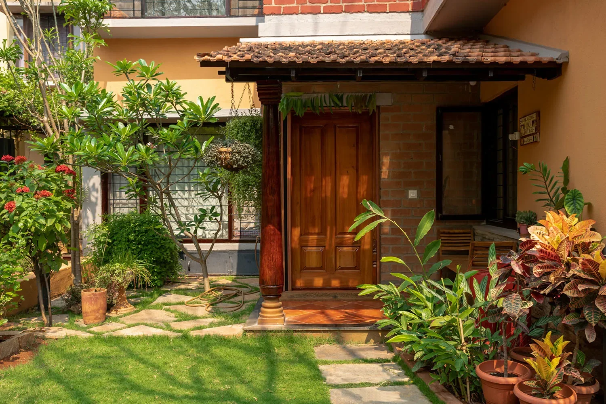
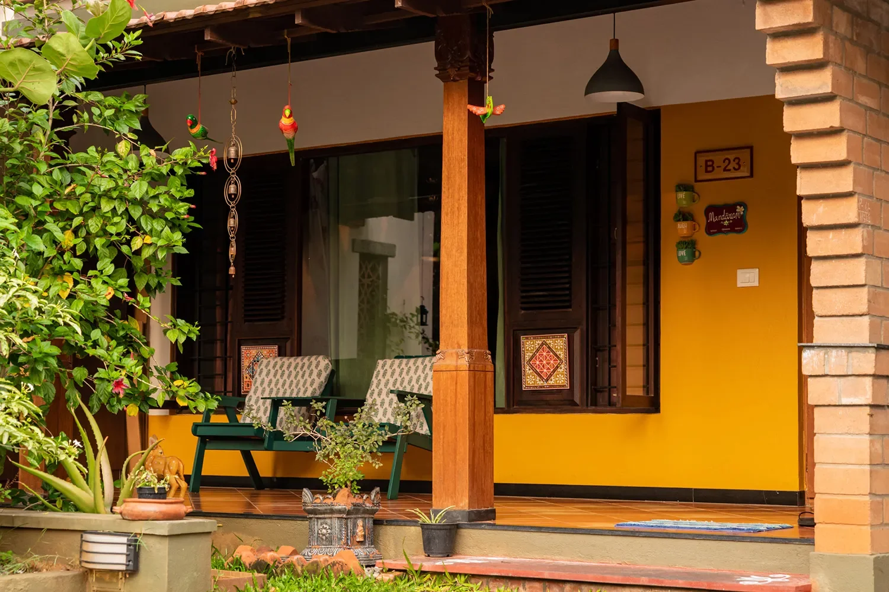
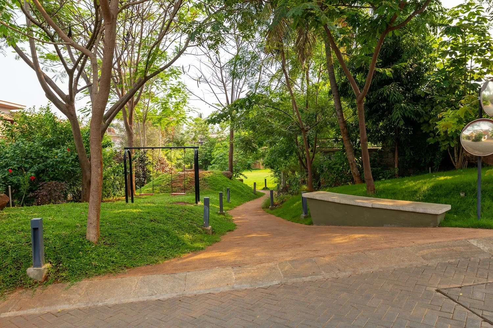
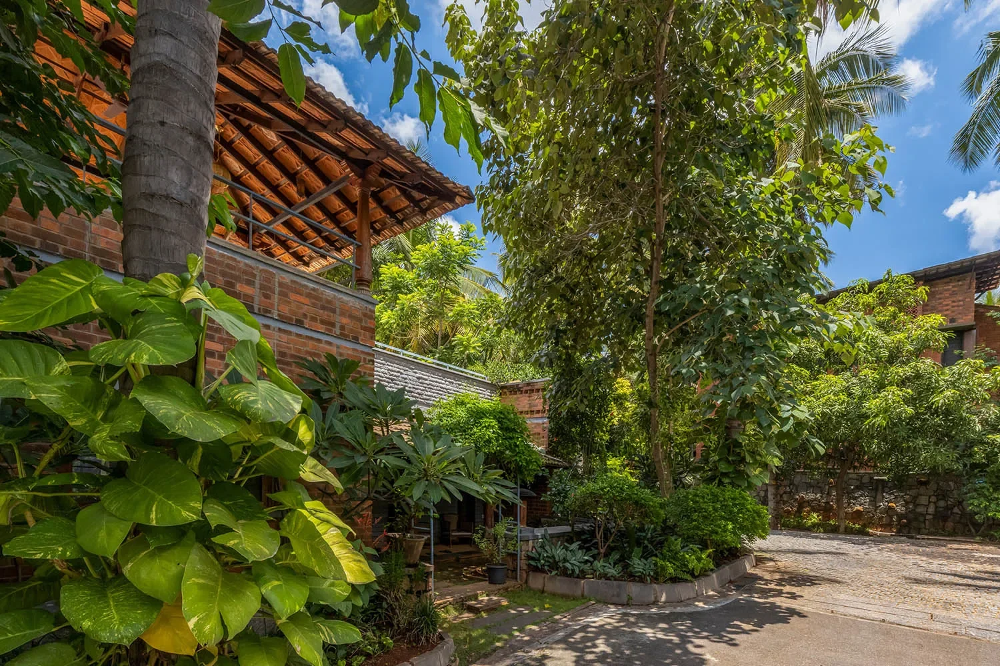
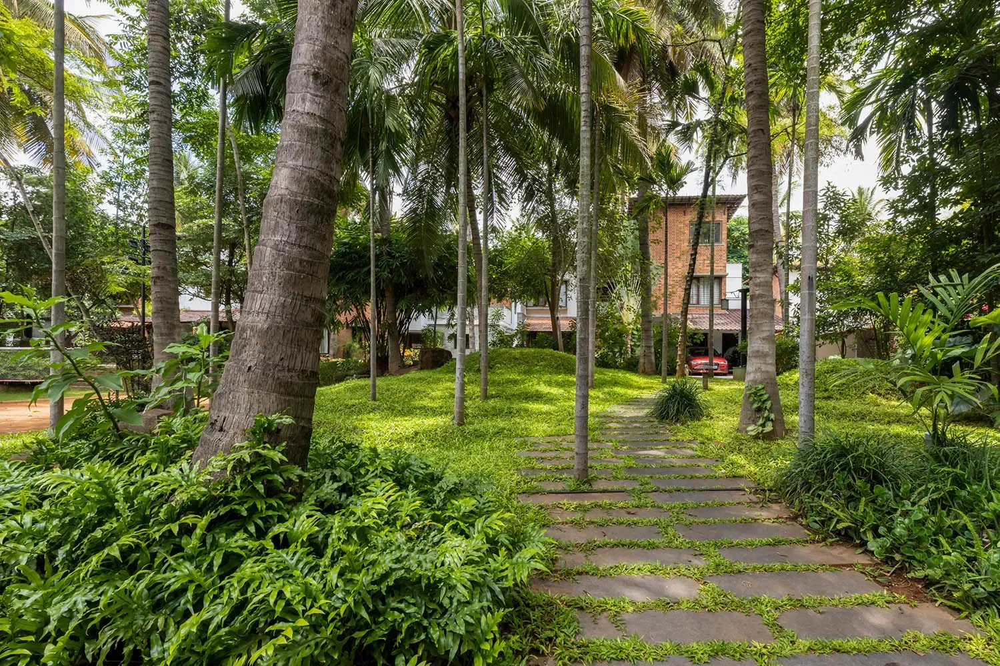
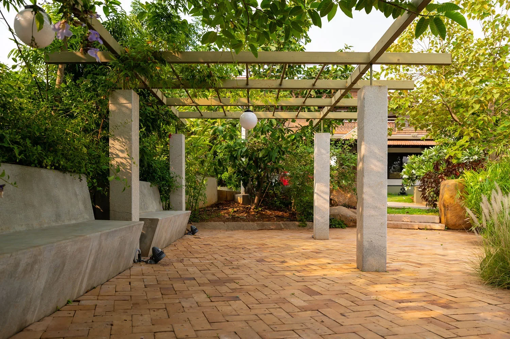

With the rise of health and wellness, people are looking for holistic ways to balance their lives. This is no different when it comes to living spaces. Developers and architects are now being asked to create homes that improve lifestyle, enhance a sense of well-being and promote harmony with nature.
What’s more, there is an increasing consumer demand for projects that support environmental sustainability goals – not just in terms of energy consumption but also in terms of water management and waste collection.
A well planned community residential design concept should ideally include some elements of the following:

Sustainability, the built environment and Social Wellbeing
Sustainable development is about the relationship between our built environment and our natural environment. Developing sustainably means creating communities that are healthy for people and for nature.
Social wellbeing is a concept that can be understood in various ways. The traditional definition of wellbeing is that it is the state of being happy and healthy. However, this definition does not directly address the relationship between oneself and others, which is an important aspect to consider when planning a residential project. A more comprehensive view of wellbeing takes into account factors such as individual health and happiness, interpersonal relationships, social trust and cohesion, environmental quality, community vitality and civic engagement. Social sustainability deals with these elements by giving equal emphasis to the environment as it does to people. This approach ensures that human needs are met without compromising the ability for future generations to meet their own needs.
The concept of social wellbeing emphasizes the importance of creating a community where people can live their lives with dignity and harmony. Additionally, studies have shown that those who live in socially sustainable communities often have better mental health than those who don’t because they feel like a part of something larger than themselves. These findings point towards desirable outcomes associated with social sustainability initiatives such as improved personal fulfilment through meaningful connections between individuals within neighborhoods or communities; higher levels of community and civic engagement.
Designing such projects requires combining different aspects at every stage.

Designing for Wellness
When you design for wellness, you are designing for the mind, body and spirit of your residents. You can design a community or building to optimize wellness by using biophilic design. Biophilic design uses elements from nature in the built environment, such as day lighting and ventilation. This creates a feeling of connectedness between people and their natural environment that promotes greater well-being and productivity. Well-designed spaces also take into account psychological needs like privacy so that occupants feel safe and secure at home or work.

Designing for Sustainability
Sustainability is more than compliance with building codes or certification standards; it’s an approach that considers how decisions made today will affect future generations through the careful use of resources. A truly sustainable project will consider social and environmental benefits as much as economic ones.

Designing for Harmony
Harmony is achieved when all parts work together to create unity out of diversity—when the whole becomes greater than its parts because each element enhances its neighbors without overpowering them (or being overpowered) in turn. A harmonious space is one in which individual components complement each other in both form and function; it feels soothing rather than chaotic because everything works together seamlessly rather than competing against each other visually or audibly—no matter what happens inside those spaces, whether they’re offices full of employees working diligently throughout the day or communities filled with joggers in the morning and walkers in the evening. The ability to interact harmoniously with others leads us toward happiness because we know our interactions make good things happen both now (through positive emotions) and later on too (as relationships develop over time).

Sustainability and Green Building initiatives
Solar energy: One of the most important renewable energy sources is solar energy. For residential projects, these systems can be installed in the form of day-lighting or active systems. Although day-lighting is an indirect use of solar power, it has a lot of potential to make a project more sustainable and environmentally friendly. Active systems are based on photovoltaic panels that convert light into electricity. These systems are connected to electricity supply and reduce the consumption from grid power.
Water conservation: Water conservation measures include rainwater harvesting and water recycling (grey water). The recycled grey water can irrigate green areas and be used for other non-contact purposes such as flush tanks. Usually, rainwater harvesting is done through storm runoff collection, which involves collecting rainwater runoff from rooftops using pipes or drainage channels and storing it in tanks or wells on site
Waste management: Solid waste management includes segregation at source, composting of biodegradable waste, using incineration for non-biodegradable waste, etc., while liquid wastewater management includes treatment at source followed by mechanical treatment like primary sedimentation tank/equalization tank/screening chamber/grit removal tank/aerated grit chamber with recycle system/septic tanks with soak pits/disinfection unit by chlorine dosing station followed by filtration through sand filter media beds

Open Space Development and Management in Residential Projects
Open space can be defined as any open area of land or water on a site that has been designed, planned and managed to achieve specific conservation and recreation objectives.
Open Space Management (OSM) refers to the process of planning, designing, developing and managing the various open spaces within a residential project. OSM is one of the most important strategies in creating sustainable cities. The purpose of OSM is to provide appropriate areas for human activities while conserving and protecting other areas, such as wetlands or areas with special biodiversity values. The importance of OSM has gained prominence in the last two decades due to urbanization and globalization which have had severe impacts on open spaces in major cities across the world. What has also become apparent over time is that these negative impacts will only increase unless we take radical steps towards addressing them now.
A well thought out community design provides a multitude of spaces that allow residents to participate in activities that they enjoy. A residential community can be beautiful and sustainable, as well as functional and healthful.
Leave A Comment